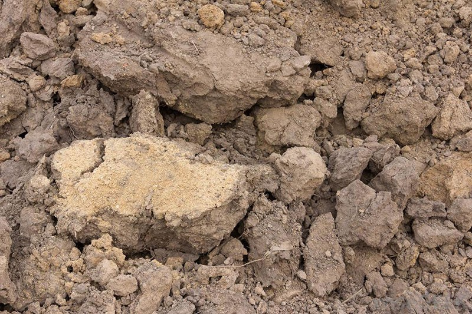

-

Sandy Soils
Due to the high content of sand (80%), sandy soils are classified as light soil types. Good friability and flowability provides excellent aeration, as well as heating. The earth quickly absorbs moisture and nutrients. At the same time, this is a disadvantage, because useful elements are not retained in the root system of plants and sink to the lower layers. Nevertheless, sandstones ideally grow: Fruit trees,Strawberry, Carrot, Melons, Onion, Currant.
-

Lime
Depending on the composition, there are also limestone soils. They are known for their high content of calcium carbonate (lime or chalk). These poor alkaline substrates warm up quickly and eventually dry out, resulting in crop depletion. Due to the deficiency of iron and calcium, the foliage of plants turns yellow, and growth slows down.
-

Peatlandst
The technical literature provides the following description of peat soil. The substrate perfectly retains mineral fertilizers, despite the fact that it contains a minimum amount of nutrients. The marshy soil is easy to cultivate. Among the disadvantages of peatlands are: High acidity, Poor surface heating, The ability to swamp, melons, Onion, Currant
-

Alumina
Heavy soil contains up to 50% clay and sedimentary rocks (silt and other components). In this regard, it slowly absorbs moisture, air and heat. During precipitation, stagnation of water forms on the surface. Because of this, plants develop late. It is problematic to process such areas, because when wet, the substrate sticks to the tools, and when dry it has a high density and hardness. A detailed description of clay soil will help to accurately determine it: Coarse-lumpy structure, High viscosity, Low bandwidth, tomatoes, cucumbers
-

Loams
This is the most common type of soil. It contains up to 30% clay and 20% sand. In terms of its properties, it is second only to chernozem. The earth is characterized by its unique microflora. Due to proper air and moisture permeability, the processes of decomposition and decay fully take place in the substrate. Loamy soils are ideal for growing all cultivated plants.
-

Brown
This variety will be the answer to the question of what kind of soil still exists in nature. Basically, they include forest soils, which can be presented in the form of loam, sandy loam or sand. The soil composition is formed in the process of decomposition of leaf litter: Dubov, Bukov, ash tree, Kedrov, Coniferous species (spruce, fir), Klenov